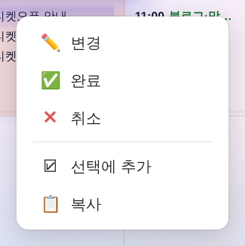
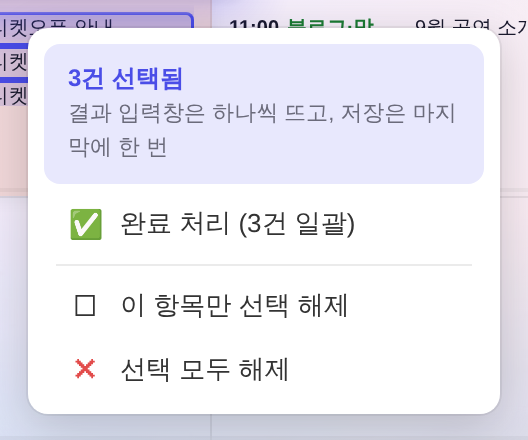
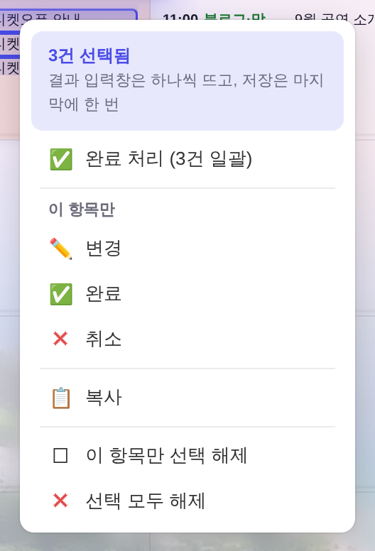
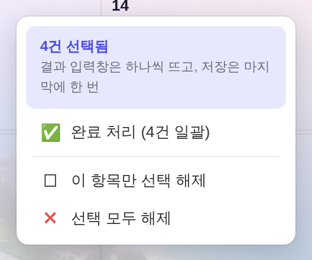
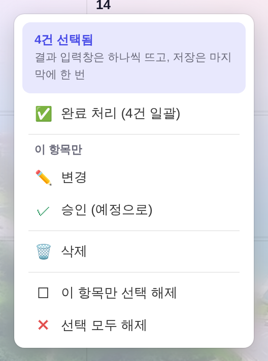

전 — 선택 0 · 단건 우클릭

후 — 동일(변경 없음)

지시(운영자): 「이게 되었다고 승인할 수는 있는데, 삭제 등 기존에 하나 클릭할 때 있었던 게 그대로 나와야 되는데 그게 없네. 확인 좀 해주라.」
스냅샷 = 정본 하네스(tools/smoke_layout.mjs) 방식으로 ?qa=admin#cal 목데이터를 1500×900 헤드리스에 띄워 찍은 것 — 실API·실데이터 미접촉.
「전」은 git show HEAD:index.html을 그대로 서빙해 같은 시나리오를 두 판본에서 돌렸다. 촬영·실측 = tools/scratch/probe_selmenu_ba.mjs.
260804 일괄 완료를 넣을 때 onEvContextMenu 머리에 분기를 하나 세웠는데, 그게 단건 메뉴를 만들기 전에 return 했다:
if(userRole==='admin' && _evSel.size>0 && _evSel.has(rowIndex)){
menuHtml = 「N건 선택됨」 + 「완료 처리(N건 일괄)」 + 「이 항목만 선택 해제」 + 「선택 모두 해제」;
_ccmShow(menuHtml,event); return; ← 아래 상태별 단건 메뉴를 통째로 건너뛴다
}
그래서 선택이 1건이라도 있으면 그 블록에서는 변경·완료(단건)·취소·복사가 사라지고, 상태가 다른 건(보류·임시·완료/취소)에 걸리면 삭제·이어쓰기까지 같이 사라졌다. 같은 함수를 쓰는 일정관리 보드의 [변경] 버튼과 패널 카드 우클릭도 같이 막혔다(경로 3곳 공통).


완료 처리(3건 일괄)과 완료가 같이 있으면 범위를 헷갈린다.
아래 묶음이 우클릭한 그 한 건에만 걸린다는 걸 못 박는 회색 소제목 한 줄(새 색·새 클래스 0 — --neutral-text 11px, 메뉴 안 기존 안내문 타이포 계승).

index.html 상태별 분기).
캘린더에서 고를 수 있는 건 예정뿐이라(_evSelable), 실제로 선택 중에 사라졌던 건 변경·완료·취소·복사 4개다.
삭제는 보류·임시·완료·취소 메뉴와 패널 카드의 ✕ 버튼에 있고, 위 3장은 그 경로가 이제 안 삼켜진다는 실측이다.
예정 블록 메뉴에도 [삭제]를 넣을지는 운영자 판단 — 지금은 종전 그대로(취소) 뒀다.
선택 3건을 유지한 채 선택 밖 블록을 우클릭한 경우도 전/후 동일 — 변경 / 완료 / 취소 / 선택에 추가 3건 / 복사.
_measure.json)| 시나리오 | 전 | 후 |
|---|---|---|
| 선택 0 · 예정 블록 | 변경 / 완료 / 취소 / 선택에 추가 / 복사 | 동일 |
| 선택 3 · 선택된 블록 | 완료 처리(3건 일괄) / 이 항목만 선택 해제 / 선택 모두 해제 | 완료 처리(3건 일괄) / 변경 / 완료 / 취소 / 복사 / 이 항목만 선택 해제 / 선택 모두 해제 |
| 선택 3 · 선택 밖 블록 | 변경 / 완료 / 취소 / 선택에 추가 3건 / 복사 | 동일 |
| 선택에 든 보류 건 | 완료 처리(4건 일괄) / 이 항목만 선택 해제 / 선택 모두 해제 | 완료 처리(4건 일괄) / 변경 / 승인(예정으로) / 삭제 / 이 항목만 선택 해제 / 선택 모두 해제 |
중복 정리 1건: 선택된 건에서는 단건 메뉴의 선택에 추가 줄을 빼고, 꼬리의 이 항목만 선택 해제가 같은 토글을 이어받는다(같은 동작 두 줄 금지).
앱지침 규약은 「Esc: 컨텍스트 메뉴가 열려 있으면 메뉴가 먼저 닫힌다」인데, 실측은 그렇지 않았다.
부트 중 먼저 등록되는 전역 Esc 핸들러(index.html L14638)가 같은 타건에서 메뉴를 이미 지우고 지나가기 때문에,
뒤에 도는 선택 해제 핸들러가 「메뉴 없네」로 보고 선택까지 통째로 지웠다 — 메뉴 한 번 열었다 닫으면 모아둔 선택이 증발.
| Esc | 전(실측) | 후(실측) |
|---|---|---|
| 메뉴 열고 1회 | 메뉴 닫힘 · 선택 3 → 0 | 메뉴 닫힘 · 선택 3 유지 |
| 이어서 2회 | 선택 0 | 선택 0 (규약대로) |
고친 방법 = 메뉴를 닫은 핸들러가 e._ccmClosedByEsc 표식을 남기고, 선택 해제 핸들러가 그 표식을 같이 본다(2줄).
python3 tools/check_design.py ✓ (raw hex 1578/1578 — 신규 색 0) · python3 tools/check_refs.py ✓ · node tools/build_annual_yr.mjs ✓